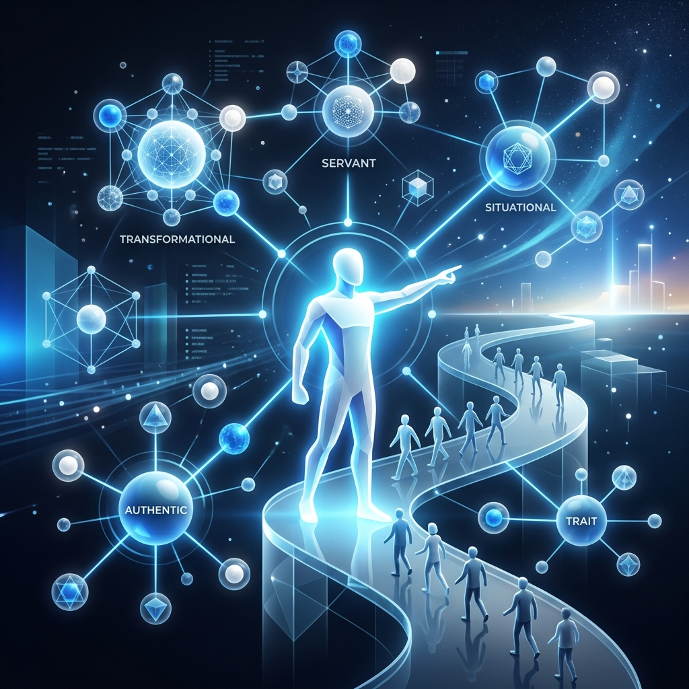

Actividad 8: El Liderazgo en los equipos
Bienvenidos al portafolio de la Actividad 8. En esta página se presenta un esquema visual que detalla las etapas de formación de equipos, sus tipologías y las "5 C" del trabajo colaborativo. Además, incluye un análisis de un caso práctico sobre resolución de conflictos y una reflexión final sobre las actitudes clave para consolidar un equipo de alto rendimiento.
